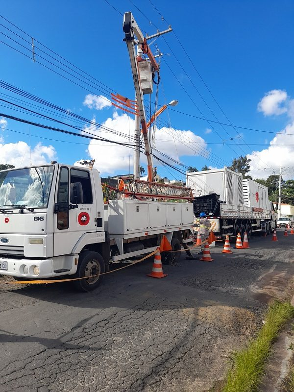
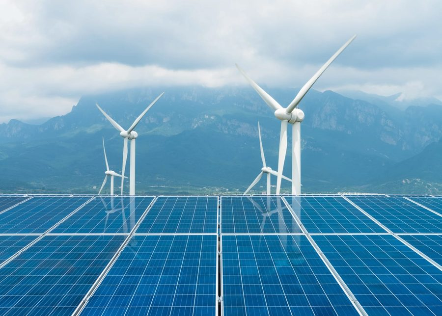
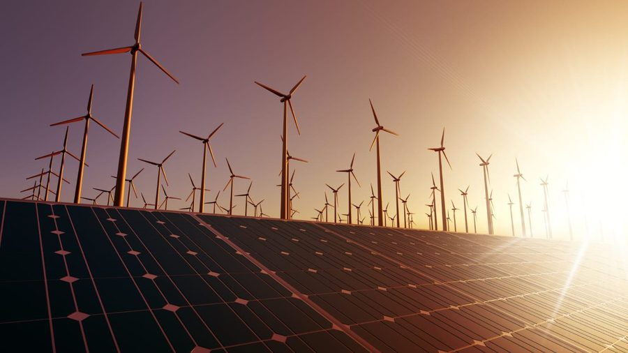
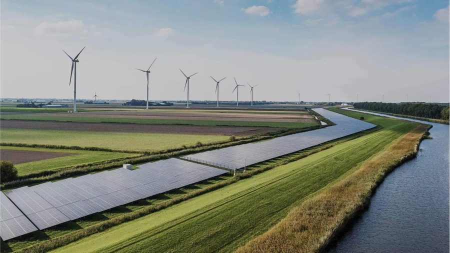

Apresentação institucional
A energia que conecta cada parte do nosso negócio
Um núcleo, cinco caminhos. Toque em qualquer ponto do mapa para explorar.
Tema 01 · Operação
Aumento da eficiência operacional
Cada visita técnica economizada é energia que chega mais rápido a quem precisa. Rotas de manutenção são otimizadas com dados em tempo real, reduzindo deslocamentos desnecessários e o tempo entre o chamado e o reparo. O monitoramento contínuo da rede permite agir antes que uma falha aconteça, mantendo a operação fluindo com menos desperdício em cada etapa.

Tema 02 · Pessoas
Maior satisfação e engajamento da equipe
Assim como o sol carrega os painéis e leva luz até a casa, investir em quem faz a EDP acontecer sustenta cada etapa da nossa energia. Ferramentas digitais tiram tarefas repetitivas do caminho da equipe, e trilhas de capacitação conectam cada colaborador às novas tecnologias de energia limpa. O resultado é uma cultura orientada a propósito, em que sustentabilidade é trabalho de todos os dias.

Tema 03 · Inovação
Estímulo à inovação e crescimento
Manter a rede acesa hoje é também construir a energia de amanhã. A digitalização da infraestrutura elétrica abre espaço para novos serviços, de mobilidade elétrica a armazenamento e geração solar descentralizada. Cada rota otimizada e cada tecnologia testada em campo vira experiência acumulada — e essa experiência sustenta o crescimento da EDP em novos mercados.

Tema 04 · Reputação
Reputação positiva impulsionada pelo bom desempenho
Confiança se constrói luz a luz. Quando a energia chega sem falhas e a manutenção é rápida, a marca EDP se fortalece na vida de quem depende dela todos os dias. Indicadores de qualidade de fornecimento são acompanhados de perto, em tempo real, e a comunicação com clientes e comunidades é transparente — assim a EDP se torna referência em transição energética nos mercados onde atua.

Tema 05 · Excelência
Redução de erros, economizando tempo e recursos
Menos retrabalho, mais precisão: cada etapa automatizada da operação libera tempo e recursos para o que realmente importa. O diagnóstico remoto evita deslocamentos desnecessários, enquanto checklists digitais reduzem falhas humanas em campo. Os recursos economizados dessa forma são reinvestidos em novos projetos de energia renovável, fechando o ciclo entre eficiência e sustentabilidade.
Sobre este projeto
Uma apresentação, do núcleo até a marca
Esta apresentação institucional da EDP foi criada para transformar cinco pilares do negócio em uma experiência visual única — do átomo que se abre em mapa mental até o pássaro que dá vida à nossa marca.
Desenvolvido por Denis Alvarenga, em colaboração com apresentação institucional SENAI.